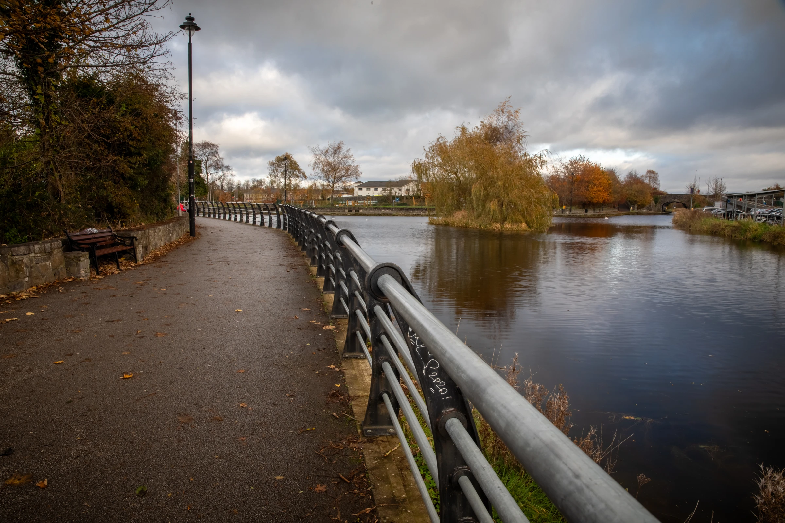
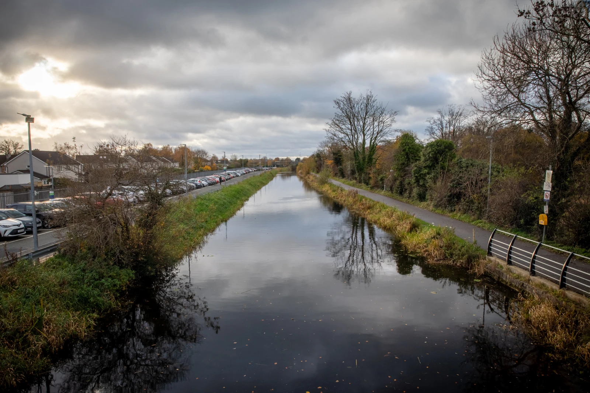
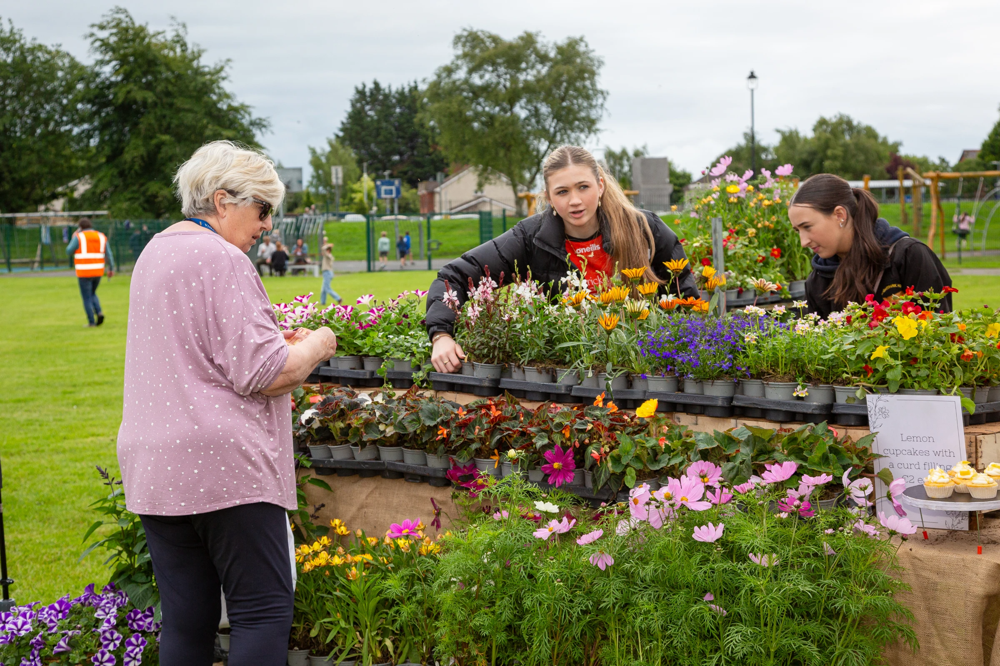

RetrofitComplete
DemoHouse Retrofit
A Maynooth home upgraded to A-rating - open for the town to learn from.
Flexible building blocks for Maynooth’s stories, projects and practical next steps.

The Zone brings local people, places and projects together. Discover what is happening nearby and find a project that interests you.
There are many ways to take part, whether you have a few minutes or a bigger idea.

tonnes CO₂e - the town's emissions baseline
of emissions come from homes (38.5%) and transport (36.7%)
designated Kildare's Pathfinder Decarbonising Zone *
* Source: Maynooth SEC Energy Master Plan
Start with how your home feels and performs. Gather your energy bills, note cold rooms or draughts, and review any existing BER report. A home energy assessment can help you understand the options.
Bring your priorities together: comfort, running costs and the work your home needs. Discuss the sequence of improvements with a qualified professional, including how insulation, ventilation and heating fit together.
Explore the support available for your planned upgrades. Compare the SEAI upgrade routes and ask a registered One Stop Shop which options may suit your home. Check the current eligibility, application steps and financing terms before committing.
Compare written proposals against the same scope of work. Ask about relevant experience, registration, timelines, warranties and who will coordinate the project. Make sure responsibilities and costs are clear before you agree.
Agree how the work will be organised and what disruption to expect. Keep the scope, schedule and contact details together, and raise questions with your project coordinator as the work progresses. Keep records of approvals and any agreed changes.
Take time to understand your upgraded home and its controls. Keep the handover documents, ask questions about maintenance and compare energy use over time, allowing for weather and changes in how you use the home.
A Maynooth home upgraded to A-rating - open for the town to learn from.
Safer walking and cycling connections from the Greenway into town.
New projects will appear here as they start.

External videos load only after you give consent.
“We just wanted to get people talking — 300 showed up.”
Organiser · Maynooth Tidy Towns
A place where local climate action comes together — from homes and transport to nature and community projects.
Learn about the Zone →Explore the practical steps on our Take Action page or connect with the local community.
Browse the project directory or explore their locations on the interactive map.
Need an accessible format? Contact the Climate Action Office.
Food, music and a first conversation about what the Decarbonising Zone could mean for the town.
Hear from your group, in its own voice — new stories will appear as groups publish.
14 August 2026 · Harbour Field, Maynooth
Tell the Climate Action Office about your group.
A quick check, then your group gets its page.
Share updates and events in your own voice.
Kildare County Council
Áras Chill Dara, Naas, Co. Kildare